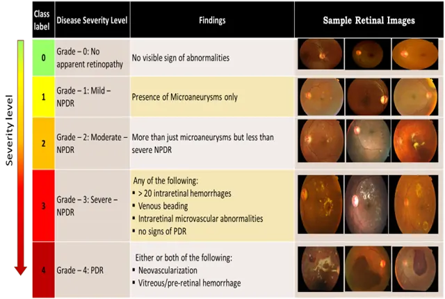

Retina AI
automated diabetic retinopathy screening with lightweight CNNs

Detection accuracy
97.46%
Severity grading
73%
Publication
IJETER — First Author
Follow-on
TEQIP COVID-19 grant
⚿
DETAILED CASE STUDY — RESTRICTED
Full UXR notes, process artifacts & design documentation are access-gated while being polished.
APPROACH
RESULTS
- Dataset: curated and pre-processed retinal images, balancing class distributions.
- Model design: prototyped multiple CNN architectures (ResNet, custom nets) for binary detection and severity grading.
- Evaluation: tuned hyperparameters via cross-validation, prioritizing sensitivity for clinical screening.

97.46% detection accuracy and 73% severity-grading accuracy — resulting in peer-reviewed publications, subsequent citations, and a presentation at the 5th International Conference on Diabetes and Endocrinology. The methodology later secured a TEQIP Government Research Grant for automated COVID-19 CT screening.